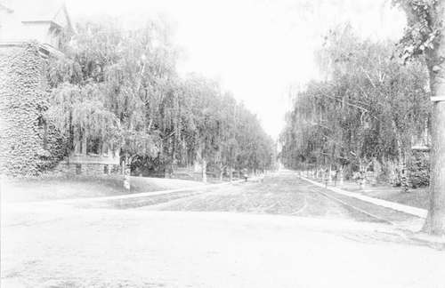
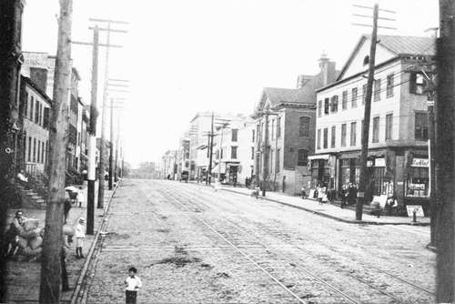

Selection Of Spectes. Part 4
Description
This section is from the book "Tree Planting Streets And Highways", by William F. Fox. Also available from Amazon: Tree planting on streets and highways.
Selection Of Spectes. Part 4
For narrow streets, or where there is little space between the house line and the curbstone, the Japanese Ginkgo is well adapted, as it docs not attain a wide spread. When fully grown it is over sixty feet high, but in New York, with its cold winters, this species does not grow to its lull size, although hardy and thrifty in other respects. This tree is not slow in growth, but still it furnishes little shade until it approaches maturity, when it assumes a tapering form with ample foliage. Thus far tile Ginkgo has been free from destructive insects. Its peculiar, fan-shaped leaves, in form like those of the maiden hair fern, retain their olive green color until early autumn, when they change to a rich yellow or orange. Though not an evergreen it is a conifer, of the yew family, a distinction seldom noticed by many who are familiar with the appearance of the tree.
The Willows furnish some species that are available for shade and ornament. Idle one best adapted for street planting is the Hay or Laurel-leaved Willow. As it is not a large tree it should be reserved for narrow streets, The slender, tapering leaves, which are bright, glossy, and of a deep green on both sides, form .1 conspicuous feature of this species.
Idle Hackberry is a medium sized tree, which, in its general appearance, resembles the Elm. Its straight trunk does not divide until it has attained considerable height, a peculiarity which is an advantage in a street tree ; but, as its roots generally rise above the ground for some distance from the trunk it is better adapted to village streets or wide avenues, where the flagstones of the sidewalk do not extend to the curb. While it is not a tree of the first magnitude, it is generally too large for narrow streets. Though a native it is rarely found in our woods; but young trees can always be obtained from nurseries. It is so uncommon that, aside from botanists, foresters, or lovers of trees, it is seldom recognized by its light name. There are places in New York where some lone specimen is described by the people in its vicinity .is " the lost tree " or " the unknown tree," and is the subject of marvelous stories as to its origin or characteristics. The Hackberry is easily identified, however, by its elm-like leaf and habit, by its peculiar bark, covered with hard, warty, excresences, and by the small, dark red, berry-shaped fruit, which clings to the stems long after the leaves have fallen -- often during the entire winter. Its rapid growth under all ordinary conditions of soil or climate, together with its freedom from disease and insects, entitles it to consideration in making a selection.
The Hardy Catalpa is a tree 50 to 70 feet high, of erect habit and ornamental character a desirable kind in certain situations. In June it is resplendent with white or violet-tinged flowers, growing in large, upright, pyramid-shaped clusters. Objection has been made to the Catalpa as a street tree, because it is liable to injury from people who persist in breaking off the flowering branches. For this reason the lower limbs should be trimmed sufficiently to prevent any injury from this source. The leaves, which are the largest seen on any of our shade trees, show no pleasing color in the fall, but turn black at the first frost. When stripped of its broad leaves the branches have a coarse blunt appearance, relieved somewhat by the display of long slender pods that hang in profusion from their tips. There are two American catalpas, and also a Japanese species, with intergrading forms or variants which necessitate some care on the part of a purchaser, for some dealers have not supplied pure seed when the I lardy Catalpa (C. Speciosa) was called for.
The spire-shaped, erect form ol the Lombardy Poplar makes it available for narrow streets and sidewalks. A single tree of this species, properly placed in a park or lawn, often makes an effective addition to the beauty of the landscape. As its branches are fastigiate, pointing upwards at a sharp angle with the trunk, it has a peculiar fascinating appearance when the wind is blowing, the upper part of the tree waving with a graceful, feathery motion, unlike that of other species. It has the advantage of rapidity in growth which, in turn, is offset by its short life. It casts but little shade, and so its use on country roads should be discontinued. Hut it is a great favorite as a road tree in some parts of Europe, especially in France, where it may be seen in unbroken rows stretching away for many miles.
The European White Birch or Weeping Birch has a pendant habit with small, finely shaped leaves that render it very attractive, especially when standing alone on a lawn where there is nothing to detract from its graceful outlines or the swaying movement of its drooping branches. If used as a street tree it should not be planted along the curb, but set at a proper distance within the fence line where its white bark will be less liable to injury. Where an entire block or street is thus planted, a striking uniformity is obtained as shown in the accompanying illustration.
The reasons for including certain trees in the foregoing list, and also the omission of others, may be questioned by some whose experience in arboriculture makes them competent authorities in everything relating to tree planting; but the list is not offered as furnishing anything like a definite, absolute rule. As already stated, the proper selection of trees for streets and roads is largely a matter of opinion and taste, replete with pros and cons. It would be presumptuous for any one to attempt to offer a list that would meet all requirements with absolute certainty. The names submitted here are offered in the way of suggestion rather than authoritative information, and are intended for the benefit of those who may not have the opportunity or inclination to study the question exhaustively.
While it is well to give a decided preference to our native trees, this should not be clone to the exclusion of foreign ones. Some of the common trees on our streets and highways, the Horse Chestnut, Ailanthus, and Lombardy Poplar for instance, are introduced species which at one time were regarded as foreigners. It is fair to assume that there are still others with beauty and useful qualities which would render them welcome and enable them in time to take a place among our common well-known trees.
White Birches.— Rochester, N. V.
A Treeless Street.
Continue to: